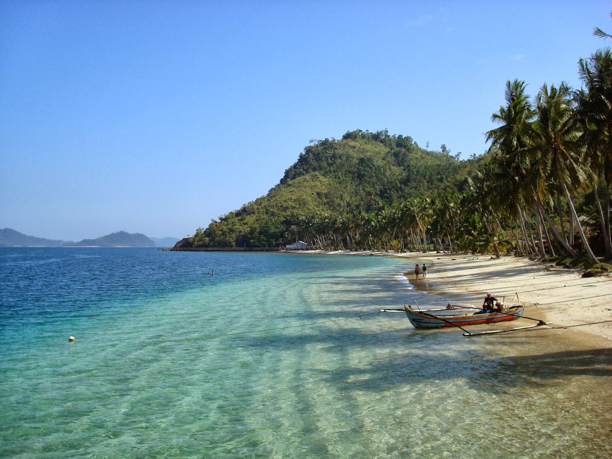
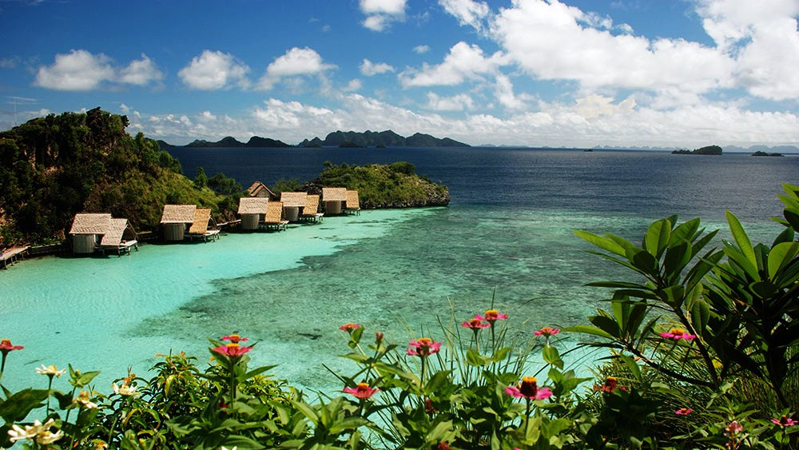
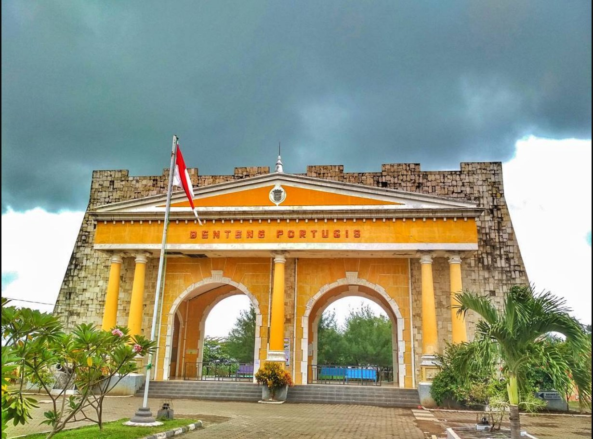

Sejarah

Kabupaten Jepara, asal nama Jepara berasal dari kata Ujung Para yang kemudian berubah menjadi Ujung Mara dan Jumpara yang kemudian menjadi Jepara. Kata Jepara sendiri memiliki arti sebagai sebuah tempat pemukiman para pedagang yang berniaga ke berbagai daerah.
Kata ujung para terdiri dari dua kata yakni ujung dan para, ujung dalam kamus bahasa Indonesia memiliki arti bagian darat yang menjorok (jauh) ke laut, sedangkan para memiliki arti menunjukan arah. Sehingga ujungpara jika digabungkan memiliki arti sebagai suatu daerah yang letaknya menjorok ke laut.
Kota Jepara dijuluki sebagai The World Carving Center atau kota ukir dunia. Sejak abad ke-19, Jepara telah dikenal sebagai salah satu daerah pusat penghasil kerajinan ukiran kayu dan mebel terbesar di Indonesia bahkan telah dikenal hingga mancanegara.
Geografis

Secara geografis, Kabupaten Jepara merupakan daerah paling ujung sebelah utara dari Provinsi Jawa Tengah. Terletak di Pantura Timur, bagian barat dan utaranya dibatasi oleh laut. Bagian timur wilayah ini merupakan daerah pegunungan. Luas wilayah daratannya 1.004,132 km² dengan panjang garis pantai 72 km.
Wilayah Kabupaten Jepara juga meliputi Kepulauan Karimunjawa, yakni gugusan pulau-pulau di Laut Jawa. Dua pulau terbesarnya adalah Pulau Karimunjawa dan Pulau Kemujan. Sebagian besar wilayah Karimunjawa dilindungi dalam Cagar Alam Laut Karimunjawa.
Wisata
Jepara dikenal tidak hanya sebagai kota ukir, tetapi juga memiliki beragam destinasi wisata yang populer dan menarik untuk dikunjungi oleh wisatawan domestik maupun mancanegara.
Sebelum pergi ke Jepara, pastikan mencari informasi tentang tempat-tempat wisata yang tersedia. Berikut adalah beberapa tempat wisata unggulan di Jepara:
Karimunjawa

Berjarak sekitar 83 km dari kota Jepara, Karimunjawa dapat diakses melalui kendaraan pribadi atau jasa travel. Tempat ini dikenal dengan keindahan bawah laut, budaya lokal yang unik, serta aktivitas seru seperti snorkeling, diving, hingga island hopping.
Benteng Portugis

Benteng Portugis adalah situs bersejarah yang menghadap langsung ke laut, sehingga menawarkan panorama yang indah. Selain nilai sejarah, tempat ini cocok untuk wisata edukasi dan fotografi.